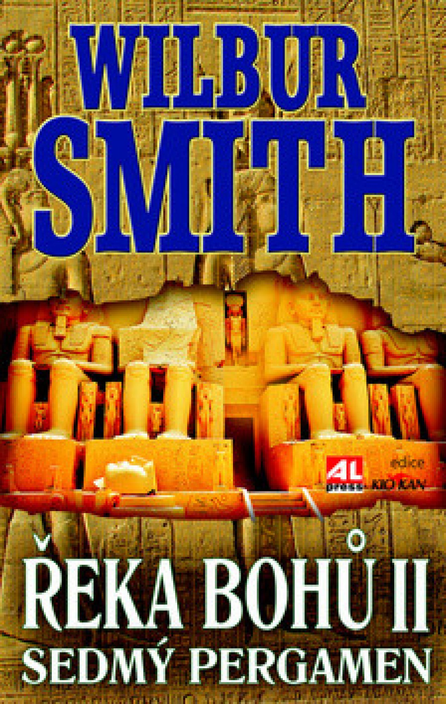
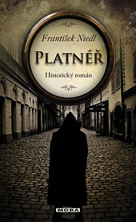
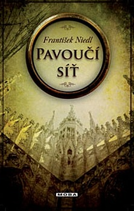
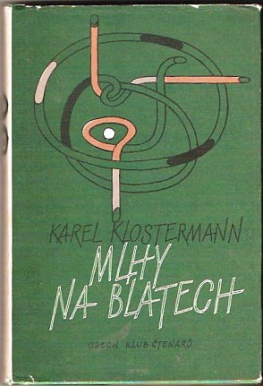

O mně

Ahoj! Jmenuji se Anežka Kodatová a miluju čtení knih. Čtu každý den, nejčastěji na cestách do práce a z práce. S každou rozečtenou knihou mám možnost prožívat příběhy postav, které se stanou na několik dnů či týdnů mými přáteli. Nejraději mám historické romány, ale nepohrdnu ani dalšími žánry. Mám ráda tlusté knihy, se kterými mohu strávit část svého života.
Na této stránce je seznam některých knih, které jsem přečela v roce 2022. Každá z nich má své kouzlo a mé hodnocení je čistě subjektivní :-)
Co jsem letos četla?
Řeka bohů II

| Autor | Wilbur Smith |
| Žánr | historický román |
| Počet stran | 510 |
První díl ságy Řeka bohů mě nadchl. Po jeho dočtení jsem proto bez velkého přemýšlení sáhla po druhém dílu. Již po prvních stránkách jsem však cítila zklamání, které se postupem času prohlubovalo. Zdroje uvádí jako žánr knihy historický román - já bych ji zařadila spíše do dobrodružné literatury. Příběh mi přišel, lidově řečeno, přitažený za vlasy. Zároveň byl docela předvídatelný. Knihu jsem dočetla silou vůle, k dalšímu pokračování ve čtení ságy mě nenamotivovala.
Moje hodnocení: **
Platnéř

| Autor | František Niedl |
| Žánr | historický román |
| Počet stran | 288 |
Tato kniha mě velmi bavila. Příběh byl poutavý, milý. Historické romány já můžu, a tenhle se navíc odehrával ve středověkké Praze. Co víc si přát - možná jen, aby kniha byla delší. Naštěstí má pokračování!
Moje hodnocení: *****
Pavoučí síť

| Autor | František Niedl |
| Žánr | historický román |
| Počet stran | 296 |
Příběh plynule navazuje na knihu Platnéř a opět mě zcela pohltil. Děj se přesouvá z Prahy na sever Itálie a z hlavní postavy, Lukáše, vyrostl hrdina, kterého si musí oblíbit snad každý. Vytkla bych jedině závěr, který přišel zcela nečekaně a z mého pohledu zůstala spousta otázek nedořešených. Moc se proto těším, až se dostanu ke čtení dalšího pokračování série.
Moje hodnocení: ****
Cizinka

| Autor | Diana Gabaldon |
| Žánr | román, fantasy, historický román |
| Počet stran | 707 |
Na motivy knihy byl natočen populární seriál, který jsem záměrně neviděla. Už od začátku jsem měla problém s celkovým stylem, jakým je kniha napsána. Překlad a některé češtinářské obraty mi přišly velmi nepovedené. Příběh byl místy slabší, místy velmi poutavý. Někdo by jej možná zařadil do červené knihovny - mně ale romantický kýč v aktuálním životním rozpoložení nevadil.
Moje hodnocení: ***
Vážka v jantaru

| Autor | Diana Gabaldon |
| Žánr | román, fantasy, historický román |
| Počet stran | 960 |
Přestože jsem si nemyslela, že ve čtení série Cizinka budu pokračovat, konec prvního dílu mi nedovolil příběh opustit. Stejěně jako první díl jsem chvílemi příběh milovala, chvílemi jsem měla chuť knihu odložit. I když mi "uměle dokonalí" hrdinové většinou nevadí, zde mi připadali svou nereálnou precizností až nesympatičtí. Líbilo se mi pozadí skutečných historických událostí - nejsem ale schopna posoudit, jak moc si je autorka přikrášlila.
Moje hodnocení: **
Mlhy na Blatech

| Autor | Karel Klostermann |
| Žánr | román |
| Počet stran | 360 |
Karla Klostermanna mám ráda a jeho kniha Mlhy na Blatech se mi možná líbila zatím ze všech nejvíce. Příběh se odehrává na jihočeském venkově - v prostředí, které je mi blízké. I když by někomu mohl připadat přerod hříbka Vojty ze zlého a obávaného na hodného a milovaného poněkud naivní, mě bavil i dojal. Pohádkové vítězství dobra nad zlem by nebylo možné bez podpory okolí, které nad nepovedeným chlapcem nezlomilo hůl. A to je, myslím, důležité poselství.
Moje hodnocení: *****